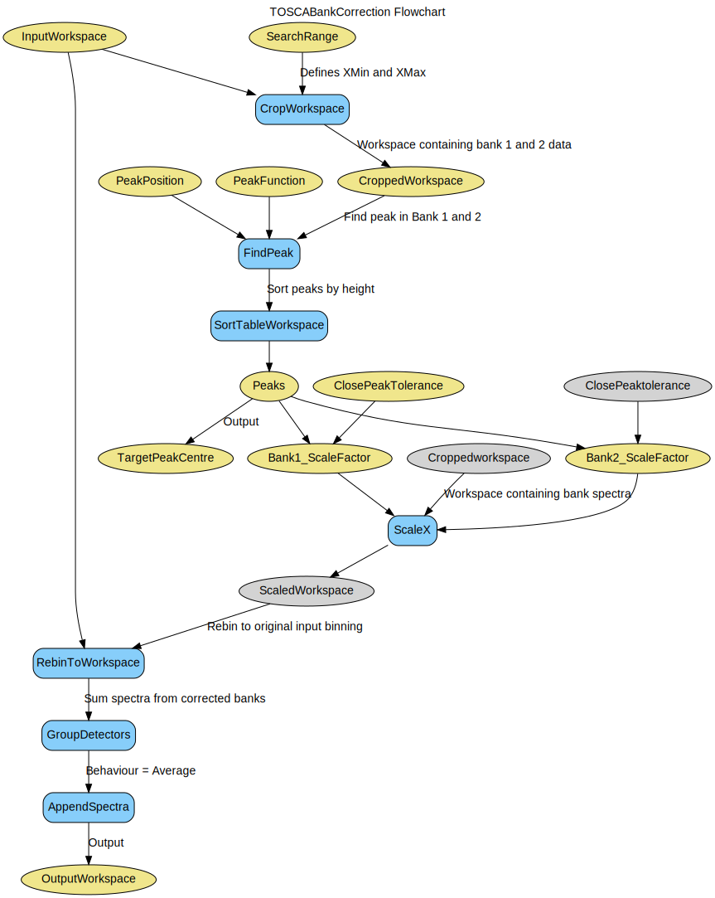

\(\renewcommand\AA{\unicode{x212B}}\)
TOSCABankCorrection v1¶

TOSCABankCorrection dialog.¶
Summary¶
Corrects TOSCA reductions where the peaks across banks are not in alignment.
Properties¶
Name |
Direction |
Type |
Default |
Description |
|---|---|---|---|---|
InputWorkspace |
Input |
Mandatory |
Input reduced workspace |
|
SearchRange |
Input |
dbl list |
200,2000 |
Range over which to find peaks |
PeakPosition |
Input |
string |
Specify a particular peak to use |
|
ClosePeakTolerance |
Input |
number |
20 |
Tolerance under which peaks are considered to be the same |
PeakFunction |
Input |
string |
Lorentzian |
Type of peak to search for. Allowed values: [‘Lorentzian’, ‘Gaussian’] |
OutputWorkspace |
Output |
Mandatory |
Output corrected workspace |
|
TargetPeakCentre |
Output |
number |
X position between the centres of the two selected peaks |
|
ScaleFactor1 |
Output |
number |
Scale factor for the first bank (histogram 0) |
|
ScaleFactor2 |
Output |
number |
Scale factor for the second bank (histogram 1) |
Description¶
This algorithm attempts to automatically correct TOSCA data in which the position of the sample has been moved and has affected the alignment of features on the spectra from forward and backscattering detector banks.
The input workspace should be an energy transfer reduction, for the default values of SearchRange and ClosePeakTolerance the X axis is assumed to be in cm-1, however the X axis is not restricted to this unit.
The algorithm works by finding peaks of a given shape (using the FindPeaks) on both the forward and backscattering banks, either selecting a peak in a given position or selecting the peak with the highest X value and attempting to match them to what is believed to be the same feature on the other bank.
A scale factor is then calculated for each bank that will align at least the selected peak and in doing so will also align the majority of misaligned peaks across the two banks.
The sacling factor is calculated as follows:
The corrected spectra are then rebinned to the input workspace (using RebinToWorkspace) to preserve the X range and to maintain bin alignment.
The sum spectra (containing both forward and back scattering detectors) is then recalculated by averaging the intensities of the two corrected spectra, this compensates for the broader peaks seen on the original sum spectra due to the misalignment of the peaks.
Note
This algorithm is only intended to provide an approximation of what the measured spectra would look like if the sample was in the expected sample position.
Workflow¶
Usage¶
Note
To run these usage examples please first download the usage data, and add these to your path. In Mantid this is done using Manage User Directories.
Example - Automatic peak selection.
original_reduction = Load('TSC14007_graphite002_red.nxs')
corrected_reduction, peak_position, scale_factor_1, scale_factor_2 = \
TOSCABankCorrection(InputWorkspace=original_reduction)
print('Target peak centre: %.f' % peak_position)
Output:
Target peak centre: 1080
Example - Manual peak selection.
original_reduction = Load('TSC14007_graphite002_red.nxs')
corrected_reduction, peak_position, scale_factor_1, scale_factor_2 = \
TOSCABankCorrection(InputWorkspace=original_reduction,
PeakPosition='715')
print('Target peak centre: %.f' % peak_position)
Output:
Target peak centre: 714
Categories: AlgorithmIndex | Inelastic\Corrections | CorrectionFunctions\SpecialCorrections